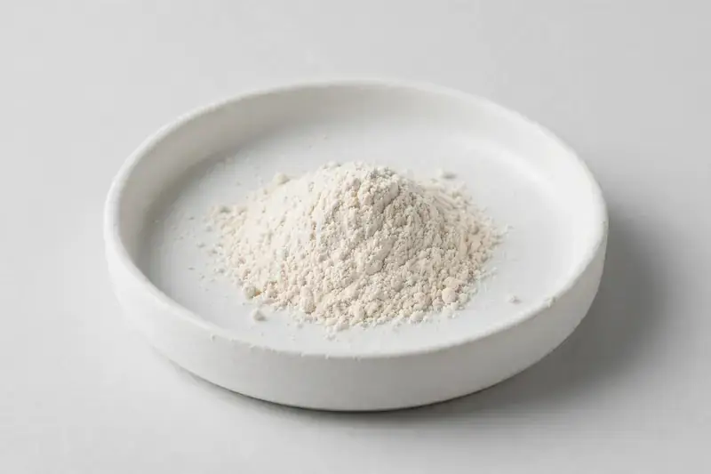

Stevia rebaudiana — a high-purity leaf extract for natural sweetener formulations across food, beverage and supplement lines.

Overview
Stevia Extract is derived from Stevia rebaudiana leaf and standardized to steviol glycosides, most commonly Reb-A. It is a leading natural high-intensity sweetener used across beverages, foods and supplements. As a Xi'an-based trading company sourcing through vetted partner producers, we align glycoside content, purity and format with your target specification.
Specifications below reflect commonly requested options in the market — not a stock list. Share your target spec and we'll confirm exactly what we can supply, honestly.
| Specification | Details |
|---|---|
| Botanical identity | Stevia rebaudiana, leaf |
| Marker compound | Reb-A — commonly requested: 60-98% (HPLC); total steviol glycosides — commonly requested: 80-95% |
| Appearance | White to off-white fine powder |
| Analytical methods | Methods referenced in buyer specifications: HPLC |
| Mesh size | Typically 80–100 mesh (confirm per inquiry) |
| Testing | COA/TDS arranged on request; scope agreed per your spec |
Applications
Documentation
We don't claim in-house labs or certifications we don't hold. COA and TDS documents can be arranged on request, and testing scope is agreed against your specification before supply.
FAQ
Related products
Trigonella foenum-graecum
Key marker: Saponins
View specs →Vitis vinifera
Key marker: OPC / Proanthocyanidins
View specs →Zingiber officinale
Key marker: Gingerols
View specs →Clitoria ternatea
Key marker: Anthocyanins
View specs →Siraitia grosvenorii
Key marker: Mogroside V
View specs →Send your target spec and volumes — we'll respond with a tailored quotation.
Request a Quote